정보통신산업기사 (2016-10-08 기출문제)
1과목: 디지털전자회로
1. P형과 N형 사이에 샌드위치 형태의 특별한 반도체층인 진성층을 갖고 있으며, 이 층이 다이오드의 커패시턴스를 감소시켜 일반적인 다이오드보다 고주파에서 동작하며, RF 스위칭용으로 사용되는 다이오드는?
- 핀(PIN) 다이오드
- 건(Gunn) 다이오드
- 임팻(IMPATT) 다이오드
- 터널(Tunnel) 다이오드
(정답률: 86%)

2. 다음 중 정전압 안정화회로의 구성요소 중 하나인 제어부 역할에 대한 설명으로 옳은 것은?
- 제너다이오드 또는 건전지로 기준전압을 얻는다.
- 출력을 제어하고 변동분을 상쇄하여 출력전압을 항상 일정하게 한다.
- 기준전압과 검출된 출력전압의 차를 제어신호로 얻는다.
- 검출된 신호를 증폭하여 변동을 상쇄할 수 있는 극성의 신호를 제어소자에 가한다.
(정답률: 71%)
3. 이미터접지 트랜지스터 증폭기회로에서 입력신호와 출력신호의 전압 위상차는 얼마인가?
- 90°의 위상차가 있다.
- 180°의 위상차가 있다.
- 270°의 위상차가 있다.
- 360°의 위상차가 있다.
(정답률: 85%)
4. 이미터 전류를 1[mA] 변화시켰더니 컬렉터 전류의 변화는 0.96[mA]였다. 이 트랜지스터의 β는 얼마인가?
- 0.96
- 1.04
- 24
- 48
(정답률: 61%)
5. 다음 중 적분기에 사용되는 콘덴서의 절연저항이 커야하는 이유로 옳은 것은?
- 연산의 정밀도를 높이기 위하여
- 연산이 끝나면 전하를 방전시키기 위하여
- 단락시켜도 잔류전압이 방전 안되기 때문에
- 회로 동작이 복잡해지기 때문에
(정답률: 71%)
6. 다음 중 이상적인 연산증폭기(OP-AMP)가 갖추어야 할 조건으로 틀린 것은?
- 입력 임피던스가 무한대
- 대역폭이 무한대
- 전압이득이 무한대
- 입력 오프셋(Offset) 전압이 무한대
(정답률: 71%)
7. 다음 그림은 윈 브리지 발진기의 블록도이다. 발진하기 위한 저항 R2의 값은?
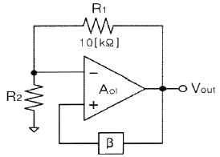
- 5[kΩ]
- 10[kΩ]
- 20[kΩ]
- 30[kΩ]
(정답률: 70%)
8. 다음 중 클랩(Clapp) 발진기의 특징이 아닌 것은?
- 콜피츠 발진기를 변형한 것이다.
- 발진주파수가 안정하다.
- 발진주파수 범위가 작다.
- 발진출력이 크다.
(정답률: 62%)
9. 다음 중 아날로그 진폭 변조 방식의 종류가 아닌 것은?
- DSB-LC(DSB-TC)
- DSB-SC
- FM
- SSB
(정답률: 76%)
10. 다음 펄스 변조 방식 중 연속레벨 변조방식과 관련이 없는 것은?
- PAM
- PWM
- PCM
- PPM
(정답률: 70%)
11. 다음의 회로 구성도로 동작하는 변복조 방식은?
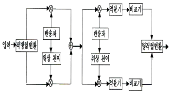
- 2-PSK
- QPSK
- 8-PSK
- OQPSK
(정답률: 73%)
12. 다음 중 위상 고정 루프(PLL : Phase Locked Loop)를 구성하는 내부 회로가 아닌 것은?
- 전압 제어 발진기
- 발진 제어 전압 발생기
- 위상 비교기
- 저역 통과 필터
(정답률: 52%)
13. 다음 회로에 정현파가 입력될 때 출력 파형으로 맞는 것은? (단, VB는 정현파의 진폭보다 크며, 다이오드는 이상적인 다이오드라고 가정한다.)
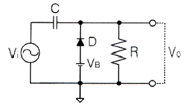
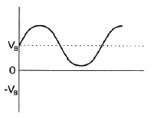
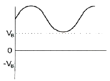
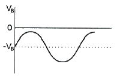
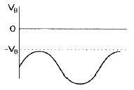
(정답률: 71%)
14. 다음 2진수의 뺄셈 결과로 맞는 것은?
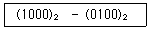
- (0011)2
- (0100)2
- (0101)2
- (0110)2
(정답률: 81%)
15. 4진수 231.3을 7진수로 변환하면?
- 45.5151
- 45.5252
- 63.5151
- 63.5252
(정답률: 59%)
16. 다음 중 부울 대수의 법칙이 아닌 것은?
- 항등법칙
- 동일법칙
- 복원법칙
- 감산법칙
(정답률: 65%)
17. 논리식 A(A+B+C)를 간략화한 것으로 옳은 것은?
- 1
- 0
- A+B+C
- A
(정답률: 75%)
18. 8비트의 링카운터를 설계할 때 최소로 필요한 플립플롭의 수는?
- 4
- 8
- 16
- 32
(정답률: 59%)
19. 다음 중 레지스터의 주 기능에 해당하는 것은?
- 스위칭 기능
- 데이터의 일시 저장
- 펄스 발생기
- 회로 동기장치
(정답률: 87%)
20. 다음 중 DRAM의 구조에서 존재하지 않는 동작은 무엇인가?
- 쓰기 모드
- 읽기 모드
- 래치(Latch)
- 대충전
(정답률: 69%)
2과목: 정보통신기기
21. 정보 단말기의 기능 중 사람이 식별 가능한 데이터를 통신 장비가 처리 가능한 2진 신호로 변환하거나 그 역(逆)을 행하는 기능은?
- 신호 변환 기능
- 입ㆍ출력 기능
- 송ㆍ수신 제어 기능
- 에러 제어 기능
(정답률: 72%)
22. 다음 중 출력장치의 기능에 대한 설명으로 알맞은 것은?
- 발생한 정보의 입력을 부호화하여 전기신호로 변환하는 것
- 입ㆍ출력 장치의 제어, 호스트 컴퓨터와의 정보교환 제어 등을 수행하는 것
- 발생한 정보의 출력을 부호화하여 전기신호로 변환하는 것
- 전기신호를 인간이 이해할 수 있는 형태로 출력하는 것
(정답률: 80%)
23. 전송 제어 장치(TCU)에서 입ㆍ출력 장치에 대한 직접적인 제어 및 상태를 감시하는 것은?
- 입ㆍ출력 제어부
- 입ㆍ출력 장치부
- 회선 접속부
- 회선 제어부
(정답률: 75%)
24. 다음 모뎀의 송신부 구성도에서 괄호 안에 들어갈 것으로 바르게 짝지어진 것은?
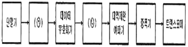
- ㉠ Scrambler, ㉡ 변조기
- ㉠ Scrambler, ㉡ 복조기
- ㉠ Descrambler, ㉡ 변조기
- ㉠ Descrambler, ㉡ 복조기
(정답률: 78%)
25. 정보통신시스템의 통신회선 종단에 위치한 신호변환장치 중에서 디지털 전송로인 경우 단극성 신호를 쌍극성 신호로 변환이 가능한 장치는?
- 코덱
- 음향결합기
- 코드변환기
- 디지털 서비스 유니트
(정답률: 83%)
26. 4위상 PSK 변ㆍ복조기에서 변조속도가 2,400[baud]일 때 데이터 전송속도는?
- 9,600[baud]
- 4,800[baud]
- 2,400[baud]
- 1,200[baud]
(정답률: 80%)
27. 다음 중 공동 이용기의 종류에 해당되지 않는 것은?
- 선로 공동 이용기
- 모뎀 공동 이용기
- 포트 공동 이용기
- 디지털 서비스 유닛 공동 이용기
(정답률: 80%)
28. 다음 중 프로토콜이 서로 다른 LAN을 연결하거나 LAN을 WAN에 접속할 경우에 사용하며, 동일한 망(Network) 내에서 주고받는 데이터를 망 내에서만 전송되도록 제한을 가하여 불필요한 작업량을 제거하여 주는 장비로 맞는 것은?
- 허브(Hub)
- 리피터(Repeater)
- 스위치(Switch)
- 라우터(Router)
(정답률: 78%)
29. 전화 전송에 있어서 송화단의 전압과 수화단의 비가 100:1일 때 전송량은 얼마인가?
- 10[dB]
- 20[dB]
- 30[dB]
- 40[dB]
(정답률: 68%)
30. 다음 중 VoIP 서비스에 대한 설명으로 틀린 것은?
- 음성과 데이터를 하나의 망으로 전송한다.
- 인터넷 프로토콜과 연계하여 다양한 부가서비스의 제공이 가능하다.
- 기존의 데이터망을 이용하므로 통신요금이 저렴하다.
- 각각의 통화는 회선을 독점으로 점유하기 때문에 대역폭 사용이 비효율적이다.
(정답률: 84%)
31. 다음 중 영상회의 시스템의 기보구성요소가 아닌 것은?
- 음향부
- 팩스부
- 영상부
- 제어부
(정답률: 84%)
32. “TV세트 위에 놓고 이용하는 상자”라는 뜻으로 가입자 신호변환 장치라고도 하며, 일반적으로 VOD, 홈쇼핑, 네트워크 게임 등 차세대 쌍방향 멀티미디어 통신서비스를 하는데 필요한 가정통신용 단말기를 무엇이라 하는가?
- Set-top Box
- Divix
- MODEM
- MP3
(정답률: 89%)
33. 다음 중 위성통신에 있어서 CDMA의 특징으로 옳지 않는 것은?
- 전파의 간섭, 혼신에 강하고 광대역 전송로가 필요하다.
- 통신 보안성이 약하고 지구국의 수를 많이 할 수 있다.
- 주파수 이용 효율이 높다.
- 대역확산 개념을 이용하여 복수개의 지구국이 위성 중계기를 공유하는 방식이다.
(정답률: 77%)
34. 다음 중 위성통신에서 자유공간 전파손실에 대한 설명으로 옳은 것은?
- 전파거리의 제곱에 비례한다.
- 전자밀도의 제곱에 반비례한다.
- 파장의 제곱에 비례한다.
- 주파수의 제곱에 반비례한다.
(정답률: 74%)
35. CDMA방식을 적용하는 이동통신망에서 주파수 재사용계수(Frequency Reuse Ratio) K는 얼마인가?
- K=1
- K=2
- K=3
- K=6
(정답률: 63%)
36. 이동통신에서 PAPR(Peak Average Power Rate)은 첨두전력 대 평균 전력비를 말하는데, 첨두전력이 10이고, 평균전력이 1일 때 PAPR은?
- 0[dB]
- 1[dB]
- 10[dB]
- 100[dB]
(정답률: 82%)
37. 다음 중 양방향 통신기능을 지닌 회화형 통신기기는?
- 비디오텍스
- 텔레텍스트
- 텔레텍스
- CCTV
(정답률: 64%)
38. GPS 위성을 통한 위치정보와 이동통신망을 활용하여 운전자 및 탑승자에게 각종 서비스를 제공하는 것은?
- 텔레메터링
- 텔레텍스
- 텔레메틱스
- 비디오텍스
(정답률: 74%)
39. 정보 가전이 네트워크로 연결되어 기기, 시간, 장소에 구애받지 않고 다양한 서비스를 제공하는 통신 서비스는?
- WiBro
- DMB
- DTV
- Home Network
(정답률: 82%)
40. 다음 중 멀티미디어가 갖는 특성이 아닌 것은?
- 동시성
- 상호작용성
- 매체를 이용한 정보의 전달
- 표본성
(정답률: 81%)
3과목: 정보전송개론
41. 다음 중 예측 양자화를 위한 예측기가 없는 것은?
- DPCM
- ADPCM
- PCM
- ADM
(정답률: 63%)
42. 채널대역폭이 3[kHz], S/N비가 20일 때 채널용량은 얼마인가?
- 3,320[bps]
- 4,840[bps]
- 6,640[bps]
- 13,176[bps]
(정답률: 67%)
43. 사람의 목소리를 PCM방식으로 디지털화하고자 한다. 음성 전달 대역폭을 0~4,000[Hz]로 정의할 경우, 샤논의 표본화 정리에 의한 표본화율(Sampling Rate)은 얼마인가?
- 4,000[Hz]
- 6,000[Hz]
- 7,000[Hz]
- 8,000[Hz]
(정답률: 80%)
44. 데이터 전송속도를 높이기 위해서 진폭변조와 위상변조를 결합한 방식은?
- QAM
- QPSK
- FSK
- MSK
(정답률: 85%)
45. 8진 PSK(Phase Shift Keying)에서 반송파 간의 위상차는?
- 25도
- 45도
- 90도
- 125도
(정답률: 81%)
46. 다음 중 QPSK에 대한 설명으로 틀린 것은?
- 두 개의 DPSK를 합성한 것이다.
- 피변조파의 크기는 항상 일정하다.
- 반송파간의 위상차는 90°이다.
- I채널과 Q채널 두 개가 있다.
(정답률: 71%)
47. 다음 중 동축케이블을 이용한 응용 분야로 적절하지 않는 것은?
- CCTV 영상 전송
- CATV 전송망
- HD영상 기기 연결
- 국가간 인터넷 연결
(정답률: 83%)
48. 다음 중 광통신시스템에서 손실의 종류에 해당되지 않는 것은?
- 커넥터 손실
- 접속 손실
- 전반사 손실
- 광섬유 손실
(정답률: 76%)
49. 다음 중 혼합형 동기식 전송 방식에 대한 설명으로 옳지 않은 것은?
- Start Bit와 Stop Bit를 가진다.
- 문자와 문자 사이에 휴지 간격이 있을 수 있다.
- 일반적으로 비동기식 전송보다 느리다.
- 송신측과 수신측이 동기 상태에 있어야 한다.
(정답률: 77%)
50. HDLC(High-Level Data Link Control) 프로토콜의 전송방식은?
- 문자(중심)방식
- 바이트(중심)방식
- 비트(중심)방식
- 혼합동기방식
(정답률: 73%)
51. 전화교환기에서 신호 정보를 집중 처리하는 특성에 의해 적용되는 방식으로 신호 회선과 통화 회선이 분리되어 있는 신호 방식은?
- 집중 신호 방식
- 통화로 신호 방식
- 개별선 신호 방식
- 공통선 신호 방식
(정답률: 65%)
52. 다음 중 기저대역(Baseband) 전송방식이 아닌 것은?
- RZ 전송방식
- NRZ 전송방식
- 캐리어 전송방식
- 바이폴라 전송방식
(정답률: 79%)
53. 통신 프로토콜의 기능 중 메시지에 주소, 오류 검출 코드 등 데이터 제어 정보를 추가하는 과정을 무엇이라 하는가?
- Encapsulation
- Reassembly
- Fragmentation
- Error Control
(정답률: 73%)
54. OSI 참조모델에서 구문(Syntax)의 협상 및 재협상, 문맥(Context) 제어기능, 암호화 및 데이터 압축기능 등을 수행하는 계층은?
- 네트워크계층
- 전송계층
- 세션계층
- 표현계층
(정답률: 77%)
55. OSI 7계층 참조모델 중 제4계층에 해당되는 것은?
- 응용계층
- 전송계층
- 표현계층
- 물리계층
(정답률: 85%)
56. IPv4의 부족한 주소문제를 해결하기 위해 개발된 기술은 무엇인가?
- NAT(Network Address Translation)
- DNS(Domain Name System)
- NIC(Network Interface Card)
- HTTP(Hyper Text Transfer Protocol)
(정답률: 74%)
57. IP address 체계에서 class A의 사설 주소 블록으로 예약되어 있는 것은?
- 10.x.x.x
- 127.x.x.x
- 172.16.x.x
- 192.168.0.x
(정답률: 76%)
58. 다음 중 라우팅 테이블에 표함되어 있지 않은 정보는?
- 송신지 IP address
- 목적지 네트워크
- 다음 홉(hop) IP address
- 로컬 인터페이스
(정답률: 73%)
59. 다음 중 변복조기(MODEM)의 송신부의 동작순서로 맞는 것은?
- 단말장치 - 부호화기 - 변조기 – 대역제한필터 - 증폭기 - 변환기
- 단말장치 - 증폭기 - 변조기 - 부호화기 - 대역제한필터 - 변환기
- 단말장치 - 부호화기 - 변조기 - 변화기 - 대역제한필어 - 증폭기
- 단말징치 - 대역제한필터 - 부호화기 – 증폭기 - 변환기 - 변조기
(정답률: 71%)
60. 분산처리 시스템의 설계에서 중요시 하는 것으로 자원의 존재위치와 상관없이 시스템의 모든 파일에 대하여 사용자가 동일한 방법으로 접근할 수 있는 것을 무엇이라 하는가?
- Framing
- Transparency
- Flow Control
- Multiplexing
(정답률: 53%)
4과목: 전자계산기일반 및 정보설비기준
61. 다음 중 컴퓨터의 기본 구조에 대한 설명으로 틀린 것은?
- CPU는 컴퓨터의 특성과 성능을 결정한다.
- 주기억장치는 레지스터보다 액세스 속도가 빠르다.
- 입, 출력 장치는 별도의 인터페이스 회로가 필요하다.
- 보조 저장 장치는 영구 저장 능력을 가지고 있다.
(정답률: 58%)
62. 산술 및 논리 연산의 결과를 일시적으로 기억하는 레지스터는?
- Instruction 레지스터
- Status Flag 레지스터
- Accumulator 레지스터
- Address 레지스터
(정답률: 76%)
63. 8비트로 표현되는 부호와 절대치(Signed Magnitude)의 방식에서 -50을 한 비트 우측으로 산술적 시프트 시키면 어떻게 표시되는가?
- 01011001
- 10110010
- 10011001
- 1 1000 0100 1011
(정답률: 50%)
64. 컴퓨터에서 음수를 표현하는 방법이 아닌 것은?
- Signed Magnitude 표현법
- Signed Code 표현법
- Signed-1's Complement 표현법
- Signed-2's Complement 표현법
(정답률: 63%)
65. 다음 보기는 운영체제의 어떤 자원 관리 기능에 대한 설명인가?
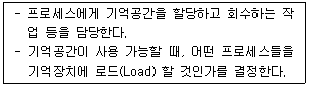
- 디스크 관리 기능
- 입출력 장치 관리 기능
- 프로세스 관리 기능
- 기억장치 관리 기능
(정답률: 70%)
66. 다음 중 운영체제가 관리하는 리소스의 종류가 아닌 것은?
- 주기억장치
- 그래픽 카드
- 프로세서 스케줄
- BIOS
(정답률: 65%)
67. 김씨는 인터넷에서 소프트웨어를 다운 받아 사용하는데, 30일이 되는 날 '프로그램을 실행시키려면 금액을 지불하고 사용하라'는 메시지를 받았다. 김씨가 사용한 소프트웨어는 무엇인가?
- 데모 프로그램
- 상용 프로그램
- 프로웨어 프로그램
- 셰어웨어 프로그램
(정답률: 67%)
68. 다음 중 고급언어로 쓰여진 프로그램을 컴퓨터에서 수행될 수 있는 저급의 기계어로 번역하는 것은?
- C 언어
- 포트란
- 컴파일러
- 링커
(정답률: 82%)
69. 다음 중 프로그램카운터의 기능에 대한 설명으로 옳은 것은?
- 다음에 수행할 명령의 주소를 기억하고 있다.
- 데이터가 기억된 위치를 지시한다.
- 기억하거나 읽은 데이터를 보관한다.
- 수행 중인 명령을 기억한다.
(정답률: 75%)
70. CPU가 실행하여야 할 명령어의 수가 75개인 경우 명령어 구분을 위한 명령코드(Op-Code)는 최소한 몇 비트가 필요한가?
- 5비트
- 6비트
- 7비트
- 8비트
(정답률: 73%)
71. 전기통신업무에 종사하는 자가 재직 중에 통신에 관하여 알게 된 타인의 비밀을 누설하는 경우의 벌칙으로 적합한 것은?
- 1년 이하의 징역 또는 1천만원 이하의 벌금
- 2년 이하의 징역 또는 5천만원 이하의 벌금
- 3년 이하의 징역 또는 1억원 이하의 벌금
- 5년 이하의 징역 또는 2억원 이하의 벌금
(정답률: 51%)
72. 다음 문장의 괄호 안에 들어갈 적당한 기구는?
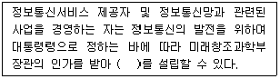
- 한국정보통신기술협회
- 한국정보통신진흥협회
- 한국정보통신기술자협회
- 한국통신사업자연합회
(정답률: 58%)
73. 다음 중 “선로설비”에 포함되지 않는 것은?
- 전주와 관로
- 선조와 케이블
- 교환기와 시험기
- 배관과 배선반
(정답률: 68%)
74. 구내통신선로설비의 구내통신 회선수 확보기준 중 대상건축물이 주거용인 경우 회선수 확보기준을 바르게 나타낸 것은?
- 국선단자함에서 세대단자함 또는 인출구구간까지 단위세대 당 1회선 이상 또는 광섬유케이블 2코아 이상
- 국선단자함에서 세대단자함 또는 인출구구간까지 단위세대 당 3회선 이상 또는 광섬유케이블 5코아 이상
- 국선단자함에서 세대단자함 또는 인출구구간까지 10제곱미터 당 1회선 이상 또는 광섬유케이블 2코아 이상
- 국선단자함에서 세대단자함 또는 인출구구간까지 10제곱미터 당 3회선 이상 또는 광섬유케이블 5코아 이상
(정답률: 61%)
75. 다음 중 미래창조과학부장관이 방송통신설비의 운용자와 이용자의 안전 및 방송통신서비스의 품질향상을 위하여 정하는 단말장치의 기술기준과 관련 없는 것은?
- 전송품질의 유지에 관한 사항
- 전화역무 간의 상호운용에 관한 사항
- 전용회선 대여의 형평성에 관한 사항
- 비상방송통신서비스를 위한 방송통신망의 접속에 관한 사항
(정답률: 54%)
76. 다음 중 해당공사의 총 공사금액이 70억원 이상 100억원 미만인 경우 감리원의 배치기준으로 가장 적합한 것은?
- 특급감리원
- 고급감리원
- 중급감리원
- 초급감리원
(정답률: 76%)
77. 다음 중 정보통신공사 발주자는 누구에게 공사의 감리를 발주하여야 하는가?
- 설계자
- 감리기술자
- 용역업자
- 정보통신공사업자
(정답률: 63%)
78. 다음 중 전기통신설비의 설치 및 보전을 위하여 타인 토지의 일시 사용 등에 대한 설명으로 잘못된 것은?
- 국유ㆍ공유의 전기통신설비 및 토지 등은 사용할 수 없다.
- 사유재산을 일시 사용하려면 미리 점유자에게 사용목적과 사용기간을 알려야 한다.
- 기간통신사업자가 사유의 토지에 대한 일시 사용기간은 6개월을 초과할 수 없다.
- 사유 토지 등을 일시 사용하는 자는 그 권한을 표시하는 증표를 관계인에게 보여주어야 한다.
(정답률: 72%)
79. 다음 중 정보통신망 응용서비스의 개발에 필요한 기술인력을 양성하기 위해 정부가 마련해야 하는 시책과 거리가 먼 것은?
- 국민에 대한 인터넷교육의 확대
- 정보통신망 전문기술인력 양성기관의 설립, 지원
- 정보통신망 이용 교육프로그램의 개발 및 보급지원
- 개인정보보호를 위한 설비 확충
(정답률: 76%)
80. 다음 중 감리원이 발주자의 권한을 대행하여 지도할 수 있는 사항이 아닌 것은?
- 품질관리 지도
- 시공관리 지도
- 용역관리 지도
- 안전관리 지도
(정답률: 68%)